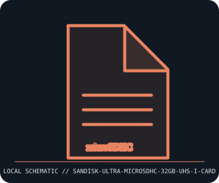

[ REMOVABLE MEDIA // INDIVIDUAL RECORD ]
SanDisk Ultra microSDHC UHS-I 32 GB Card
microSDHC / UHS-I capacity-specific card family. This entry describes the identified medium or reader, not a bundled drive/media pair; exact capacity and compatibility are model- and host-dependent.

IDENTIFICATION: Record the full label, manufacturer part number, revision/date code, format markings, and packaging. Product-family names alone do not identify capacity generation or supported drive.
Format and compatibility
| Catalog subcategory | Flash drives and memory cards |
|---|---|
| Catalog identity | SanDisk Ultra microSDHC UHS-I 32 GB Card |
| Format / era | microSDHC / UHS-I capacity-specific card family |
| Media/device distinction | This record is the removable medium only; the compatible drive is separate and not included. |
| Capacity / interface | 32 GB microSDHC removable card; SD Speed Class 10 / UHS Speed Class 1 is common for this capacity family (check exact packaging/SKU). microSDHC capacity is greater than 2 GB through 32 GB inclusive. |
| Compatibility | Requires a microSDHC- and UHS-I-capable host/reader; a UHS-I card can function in supported older microSDHC slots at lower speed, but SDXC-only or legacy microSD host support is model-specific. Use a reputable full-size adapter only for physical SD slots. |
| Variant caveat | SanDisk Ultra 32 GB has multiple product generations, speed ratings, and model codes; the package’s speed icons and complete SKU govern. microSDHC normally uses FAT32, but host-specific formatting and capacity limits apply. |
Media care and preservation
Keep contacts clean and dry; use a case/adapter to prevent loss and avoid forcing the card. Eject before removal where host writes may be pending. Verify actual capacity and retain checksummed copies; flash cards are not archival storage by themselves.
- Preserve original packaging, labels, and acquisition/context notes; photograph both sides and record any write-protect state before use.
- Keep valuable contents in at least two independently verified copies on separate storage. Record a checksum and test a restore; removable media alone is not a preservation plan.
Model and version caveats
SanDisk Ultra 32 GB has multiple product generations, speed ratings, and model codes; the package’s speed icons and complete SKU govern. microSDHC normally uses FAT32, but host-specific formatting and capacity limits apply.
Compatibility statements are limited to the named format/model and published host support. Check manufacturer manual, firmware, regional SKU, and media generation before inserting or writing. A similar connector or cartridge shell is not proof of compatibility.
Sources & further reading
- SD Association — SD standards overviewPrimary standards-family reference for SDHC capacity, speed classes, UHS bus modes, and card compatibility.
- SanDisk — microSD card supportManufacturer product identification and support; use exact SKU for generation-specific speed ratings.
Sources identify the relevant standard, manufacturer, or product family. Where an archived SKU-specific datasheet is unavailable, the exact label/manual and supported host list take precedence over family-level marketing claims.